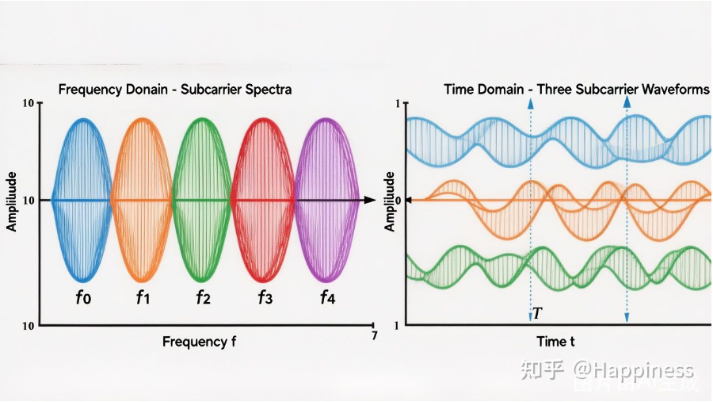
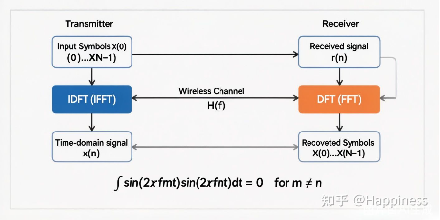

第 2 讲：正交频分复用——“正交”到底是什么意思？
上一讲我们聊到，OFDM 的核心思想是把一个宽带信道切成若干个窄带子载波，让每个子载波单独去面对“平坦”的信道。但你可能马上会产生一个疑问：这些子载波的频谱是相互重叠的，难道不会互相干扰吗？
这正是 OFDM 最精妙的地方——子载波之间的频谱虽然重叠，但它们满足正交性，彼此之间没有干扰。
“正交”这个词，在教材里出镜率极高，但很多人对它的理解停留在“两个向量夹角 90 度”这一层面。今天，我们就用最直观的方式，把 OFDM 中的正交性说透。
一、什么是正交？从几何到信号
在几何里，两个向量正交意味着它们的内积为零，例如 $\vec{a}\cdot\vec{b}=0$。两个正交向量“互不干扰”——你在 $\vec{a}$ 方向上投影，得不到任何 $\vec{b}$ 的分量。
信号处理里的正交性是这个概念的推广。对于两个信号 $s_m(t)$ 和 $s_n(t)$，若它们在区间 $[0,T]$ 上的内积（相关积分）为零：
\[ \int_0^T s_m(t)\cdot s_n^*(t)\,dt=0,\qquad m\ne n \]
就称这两个信号在该区间内正交。
OFDM 中，每个子载波是一个复指数信号：
\[ s_k(t)=e^{j2\pi f_k t},\qquad t\in[0,T] \]
其中 $f_k=f_0+k\cdot\Delta f$ 是第 $k$ 个子载波的频率，$f_0$ 为最低子载波频率，$\Delta f$ 为子载波间隔，$T$ 为 OFDM 符号持续时间（不含循环前缀）。
二、子载波正交性的数学推导
我们来验证两个不同子载波 $s_m(t)=e^{j2\pi f_m t}$ 和 $s_n(t)=e^{j2\pi f_n t}$（$m\ne n$）之间的内积：
\[ \langle s_m,s_n\rangle =\int_0^T e^{j2\pi f_m t}\cdot e^{-j2\pi f_n t}\,dt =\int_0^T e^{j2\pi(f_m-f_n)t}\,dt \]
令频率差 $\Delta f_{mn}=f_m-f_n$，则：
\[ \langle s_m,s_n\rangle =\int_0^T e^{j2\pi\Delta f_{mn}t}\,dt =\frac{e^{j2\pi\Delta f_{mn}T}-1}{j2\pi\Delta f_{mn}} \]
要使这个积分等于零，需要：
\[ e^{j2\pi\Delta f_{mn}T}=1 \]
即：
\[ \Delta f_{mn}\cdot T=k,\qquad k\in\mathbb{Z}^{+} \]
当且仅当子载波间隔 $\Delta f$ 是 $1/T$ 的整数倍时，任意两个不同子载波的内积均为零，正交性成立。
在 OFDM 系统中，我们选取最小子载波间隔：
这就是 OFDM 子载波间隔设计的根本来源。$T$ 越长，$\Delta f$ 越小，频谱效率越高；$T$ 越短，则符号速率越快，但需要更多带宽。

三、频谱重叠却不干扰——直觉解释
看完公式，让我们用直觉再感受一下这件事。
OFDM 每个子载波的频谱形状是一个 sinc 函数：
\[ S_k(f)=T\cdot\mathrm{sinc}\big((f-f_k)T\big) =T\cdot\frac{\sin[\pi(f-f_k)T]}{\pi(f-f_k)T} \]
sinc 函数的一个关键性质是：它在 $f=f_k\pm n/T$（$n$ 为非零整数）处精确过零点。
而 OFDM 的子载波间隔正好是 $1/T$，所以：
第 m 个子载波的中心频率 $f_m$，恰好落在所有其他子载波的零点上。
当接收端对第 m 个子载波做解调（即在 $f_m$ 处采样频谱）时，所有其他子载波的贡献恰好为零——这就是“频谱重叠但无 ICI（子载波间干扰）”的根本原因。

四、正交性在接收端的实现——DFT 的作用
你也许会问：接收端怎么利用正交性来分离每个子载波上的数据？
答案是：离散傅里叶变换（DFT）。
设接收到的 OFDM 时域信号为 $r(t)$，对第 n 个子载波上的数据信号 $X[n]$ 的解调，等价于计算：
\[ \hat{X}[n]=\int_0^T r(t)\cdot e^{-j2\pi f_n t}\,dt \]
由于子载波的正交性，来自第 $m\ne n$ 个子载波的分量在上述积分中消失，只留下 $X[n]$ 本身（加上信道影响和噪声）。
在数字系统中，连续积分变成求和，这正是离散傅里叶变换（DFT）的定义：
\[ \hat{X}[n]=\sum_{k=0}^{N-1}r[k]\cdot e^{-j2\pi nk/N} \]
其中 $N$ 是子载波总数，$r[k]$ 是第 $k$ 个采样点。
这就是 OFDM 接收端做 FFT 的原因——FFT 不只是为了计算效率（虽然它把 $O(N^2)$ 降到了 $O(N\log N)$），更是正交性原理的直接体现。发射端用 IFFT“叠加”所有子载波，接收端用 FFT“分离”所有子载波，正交性保证了这两步操作是完美可逆的。

五、工程视角：LTE中的正交性参数
理论上，只要子载波间隔是 $1/T$ 的整数倍，正交性就成立。但在实际系统中，正交性会被以下因素破坏：
- 载波频率偏差（CFO）：发射端和接收端的振荡器频率存在误差，导致子载波偏移，各子载波不再在彼此的零点处——这会产生子载波间干扰（ICI）。CFO 是 OFDM 系统最敏感的非理想因素之一，第 13 讲会专门讲解。
- 多普勒频移：高速移动场景（如高铁）中，相对运动导致每个子载波的频率发生偏移，同样破坏正交性。
- 相位噪声：振荡器的相位随机抖动，在频域上表现为子载波能量“溢出”到邻近子载波。
以 LTE（4G） 为例，其子载波参数设计为：
| 参数 | 数值 |
|---|---|
| 子载波间隔 $\Delta f$ | 15 kHz |
| OFDM 符号时间 $T_u$ | $1/15000\approx66.7\,\mu s$ |
| 子载波数（20MHz 带宽） | 1200 个数据子载波 + 保护子载波 |
| FFT 点数 | 2048 |
其中 $T_u=1/\Delta f=1/15\text{kHz}\approx66.7\,\mu s$，完美符合 $\Delta f=1/T$ 的正交条件。
5G NR则引入了灵活参数集（Flexible Numerology），子载波间隔可以是 $15\text{ kHz}\times 2^\mu$（$\mu=0,1,2,3,4$），即 15/30/60/120/240 kHz——每种配置都保持 $\Delta f=1/T$ 的正交性关系，但通过调整 $T$ 和 $\Delta f$ 来适应不同频段和业务需求。
总结
这一讲，我们从数学和直觉两个角度搞清楚了 OFDM 中“正交”的含义：
- 数学层面：当子载波间隔 $\Delta f=1/T$ 时，任意两个子载波在一个符号周期内的相关积分为零，即满足正交性。
- 直觉层面：每个子载波的 sinc 频谱恰好在其他子载波的中心频率处为零，使得解调时“一点不沾”。
- 实现层面：接收端的 FFT 正是正交分解的数学实现，它保证了多个子载波可以在频谱重叠的情况下，仍然被独立地还原出来。
- 工程层面：CFO、多普勒频移等非理想因素会破坏正交性，产生 ICI，这是 OFDM 系统设计中需要重点应对的挑战。
理解了正交性，你就理解了 OFDM“能够工作”的根本原因。
下一讲，我们将从整体视角来看 OFDM 发射机的完整框架——从比特串进去，到射频信号出来，每一步到底在做什么。
思考题
- 如果 OFDM 系统的子载波间隔设为 $\Delta f=2/T$（即两倍最小间隔），子载波之间还正交吗？频谱效率会发生什么变化？
- 在 LTE 系统中，若载波频率偏差（CFO）为子载波间隔的 1%（即 150 Hz），对信号质量的影响大吗？请做定性分析。
- 为什么 5G NR 选择 $\Delta f=15\times2^\mu\text{ kHz}$ 而不是其他值？这与 LTE 的向后兼容性有什么关系？